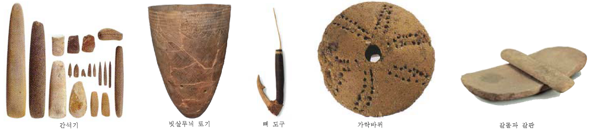

- Paleolithic Age
- New stone Age
- Bronze / lron Age
New stone Age
The Neolithic, also known as the ("New Stone Age"), the final division of the Stone Age,
began about 12,000 years ago when the first developments of farming appeared
in the Epipalaeolithic Near East, and later in other parts of the world.
The Neolithic division lasted (in that part of the world) until the transitional period of the Chalcolithic
from about 6,500 years ago (4500 BC), marked by the development of metallurgy, leading up to the Bronze Age and Iron Age.
In other places the Neolithic lasted longer.
In Northern Europe, the Neolithic lasted until about 1700 BC, while in China it extended until 1200 BC.
Other parts of the world (including Oceania and the northern regions of the Americas) remained broadly in the Neolithic stage of development until European contact.
